Panduan lengkap untuk Pembeli dan Admin: mulai dari mendaftar, membeli akun premium, hingga mengelola produk, gudang akun, transaksi, dan dashboard.
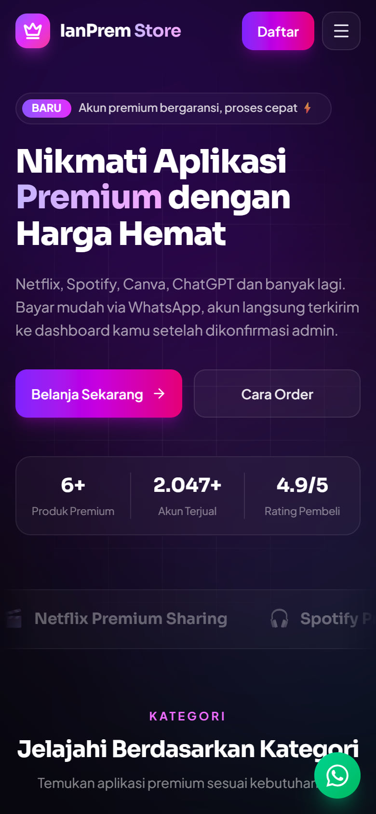
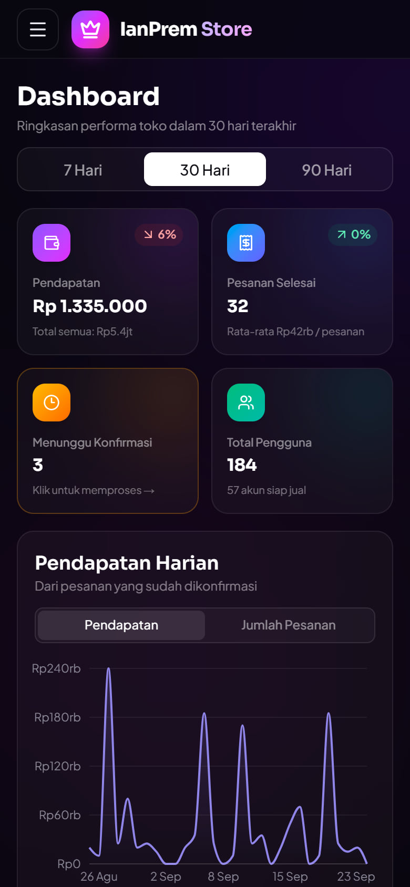
Klik judul untuk langsung menuju bagian tersebut.
Gambaran singkat cara kerja IanPrem Store sebelum masuk ke langkah-langkah detail.
IanPrem Store adalah toko online untuk jual beli akun aplikasi premium seperti Netflix, Spotify, Canva, ChatGPT, dan lainnya. Ada tiga hal yang perlu diketahui:
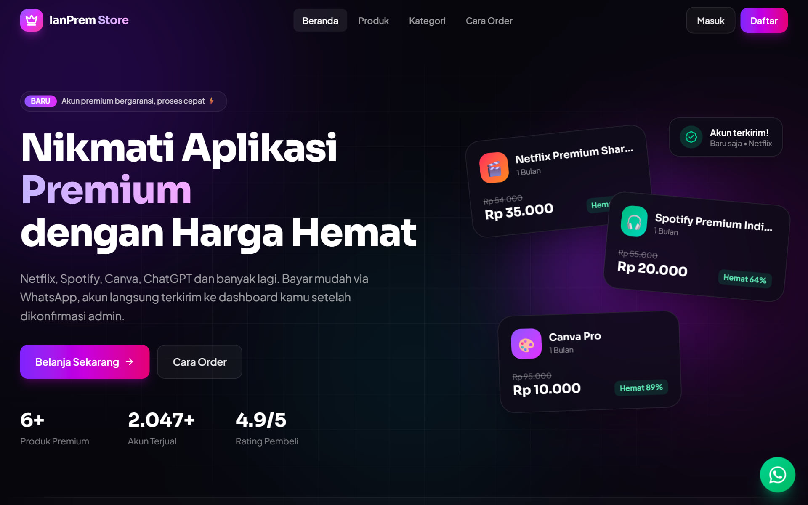
Website memiliki dua peran akun, yaitu User (Pembeli) dan Admin. Orang yang belum login disebut Pengunjung.
| Fitur | Pengunjung | Pembeli | Admin |
|---|---|---|---|
| Melihat kategori, produk, harga & stok | ✓ | ✓ | ✓ |
| Mencari & memfilter produk | ✓ | ✓ | ✓ |
| Membuat pesanan (checkout) | ✕ | ✓ | ✓ |
| Melihat Pesanan Saya & menerima akun | ✕ | ✓ | ✓ |
| Membatalkan pesanan sendiri (masih menunggu) | ✕ | ✓ | ✓ |
| Kelola kategori & produk | ✕ | ✕ | ✓ |
| Kelola Gudang Akun (stok) | ✕ | ✕ | ✓ |
| Konfirmasi / batalkan transaksi semua pembeli | ✕ | ✕ | ✓ |
| Dashboard, grafik & riwayat transaksi | ✕ | ✕ | ✓ |
| Status | Arti | Siapa yang mengubah |
|---|---|---|
| ⏱ Menunggu | Pesanan sudah dibuat dan menunggu pembayaran atau konfirmasi admin. | Otomatis saat pembeli checkout |
| ✓ Selesai | Pembayaran dikonfirmasi dan akun sudah terkirim ke pembeli. | Admin (tombol Konfirmasi) |
| ✕ Dibatalkan | Pesanan dibatalkan dan tidak diproses. | Admin, atau pembeli selama status masih Menunggu |
Untuk pelanggan yang ingin membeli akun premium: dari melihat produk sampai menerima akun.
Kamu bisa melihat semua produk tanpa perlu login. Buka ian-prem-store.vercel.app di browser HP atau komputer.
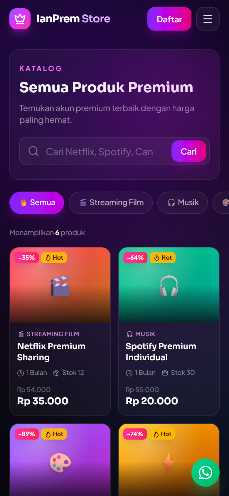
| Elemen | Keterangan |
|---|---|
| Label -35% | Besar diskon dibandingkan harga coret (harga normal). |
| Label 🔥 Hot | Produk unggulan pilihan admin. |
| 🕐 1 Bulan | Durasi atau masa aktif akun. |
| 📦 Stok 12 | Jumlah akun yang siap dikirim. Jika Stok Habis, produk belum bisa dibeli. |
| Harga tebal | Harga yang kamu bayar. Harga yang dicoret adalah harga normal. |
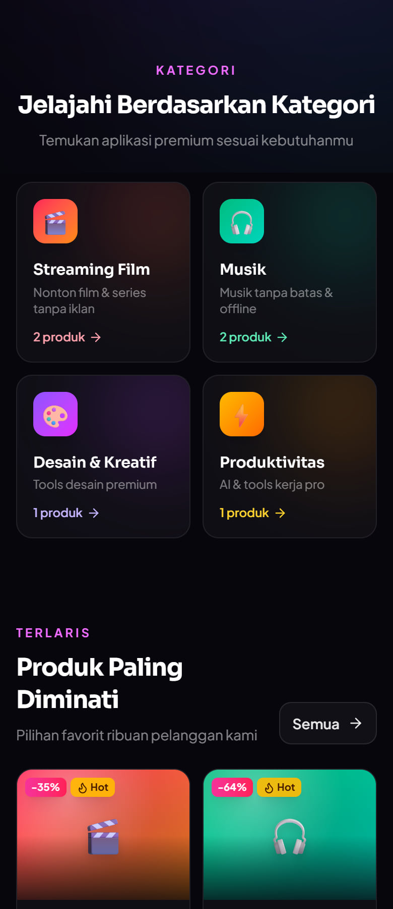
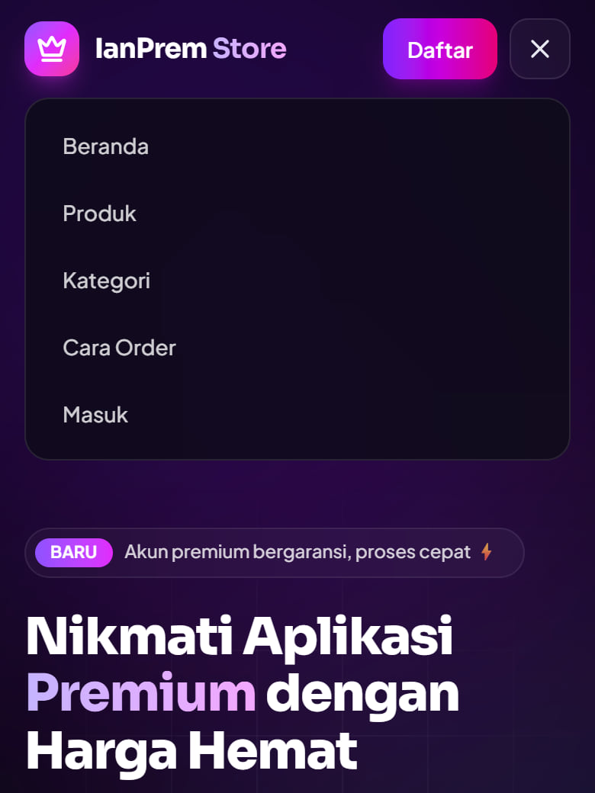
Akun diperlukan agar akun premium yang kamu beli bisa dikirim dengan aman hanya ke kamu. Pendaftaran gratis.
08123456789. Admin bisa menghubungimu lewat nomor ini.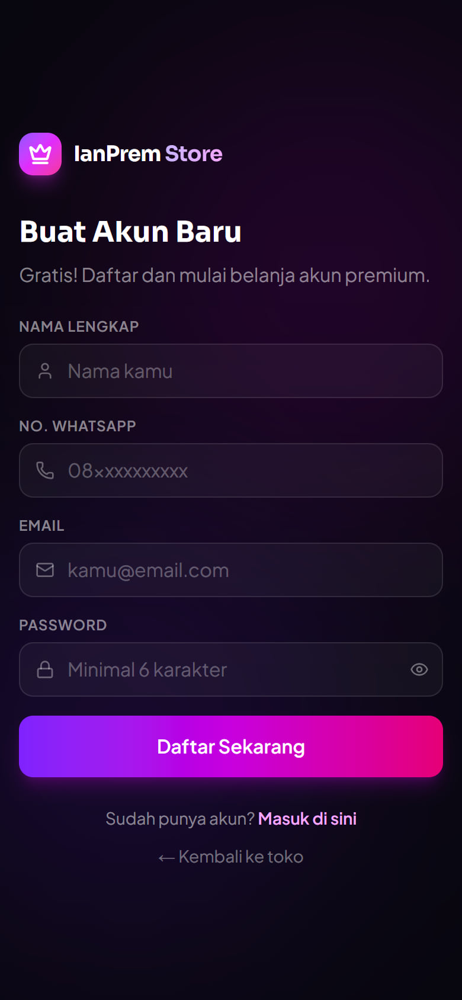
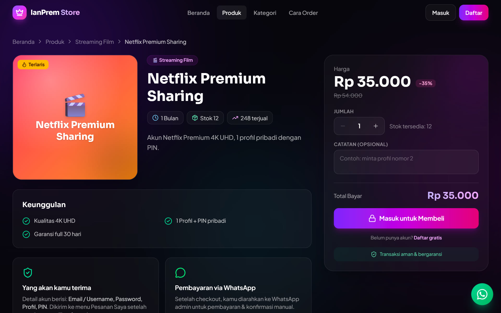
| Bagian | Isi |
|---|---|
| Nama & kategori | Nama produk dan kelompoknya. |
| Durasi · Stok · Terjual | Masa aktif, jumlah akun tersedia, dan jumlah yang sudah terjual. |
| Deskripsi | Penjelasan produk dan aturan pemakaian dari admin. Baca sebelum membeli. |
| Keunggulan | Daftar kelebihan produk, misalnya kualitas 4K atau garansi. |
| Yang akan kamu terima | Data akun yang akan dikirim, misalnya Email, Password, Profil, PIN, atau Link Akses. |
| Panel beli | Harga, jumlah, catatan, total bayar, dan tombol beli. Di HP, panel ini ada tepat di bawah info produk. |
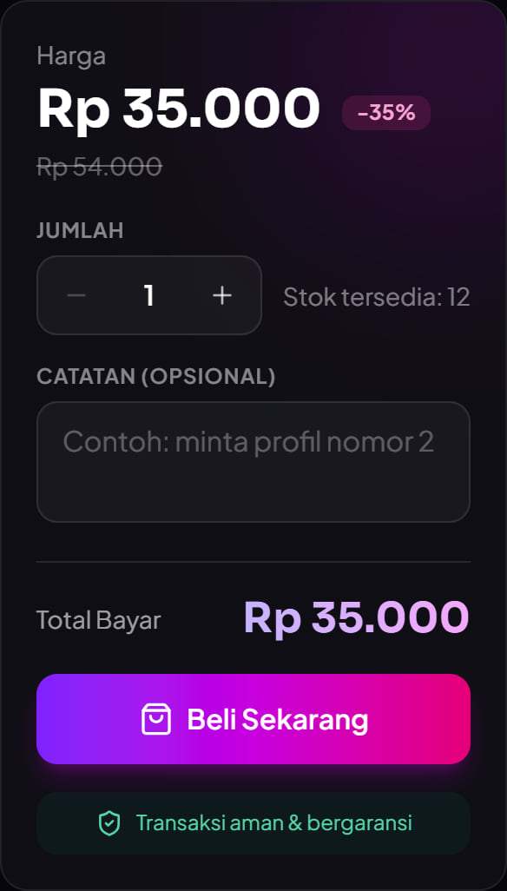
IPS-260923-8F2C1A).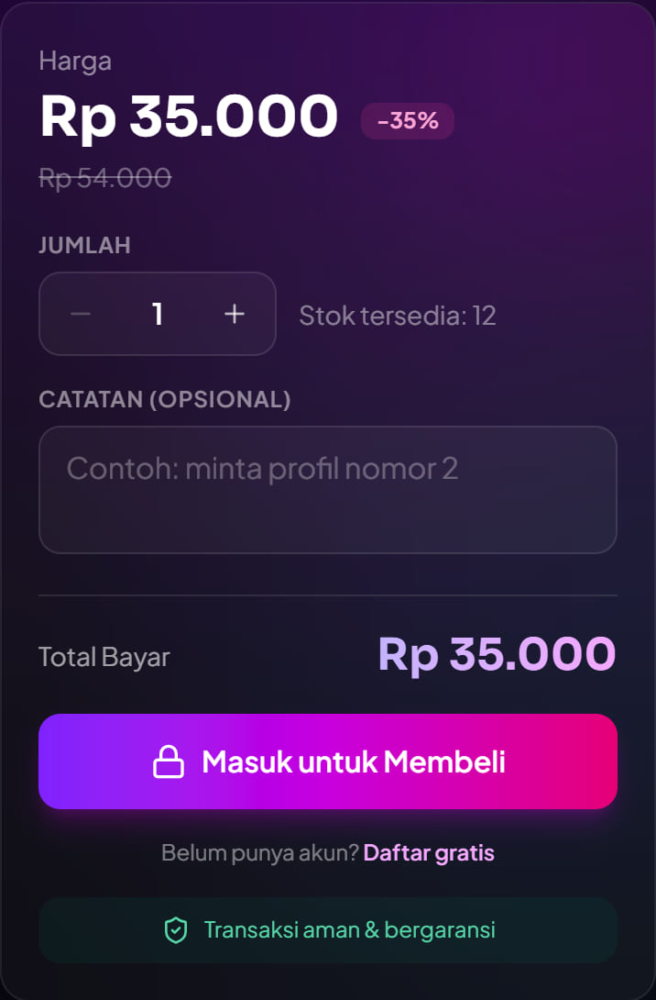
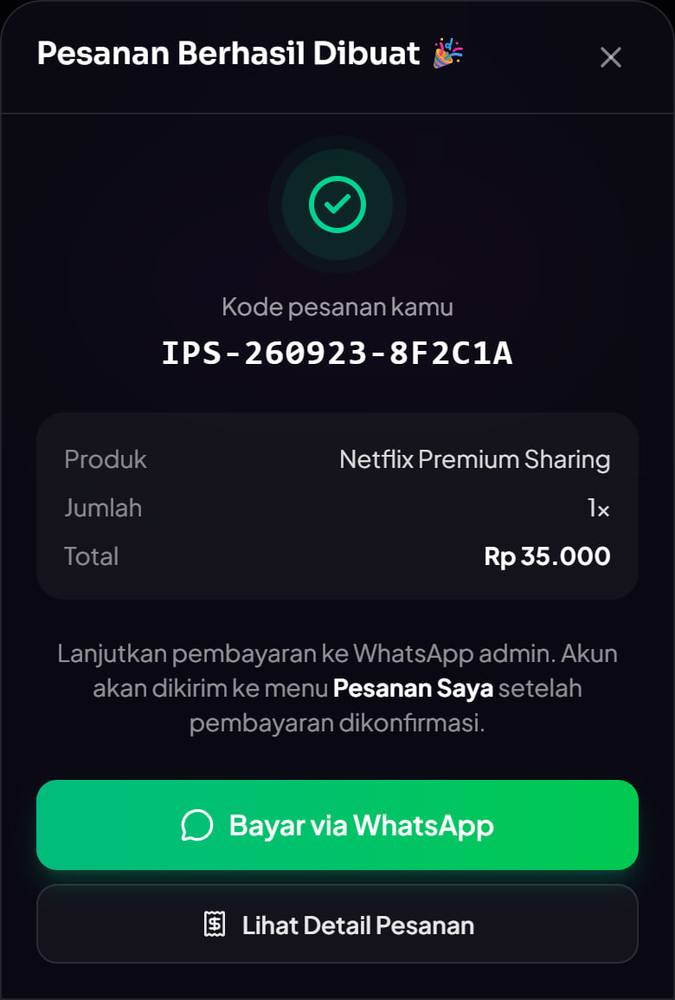
Buka menu Pesanan Saya lewat ikon profil di kanan atas, atau lewat menu ☰ di HP. Semua pesananmu tampil di sini, lengkap dengan tab Semua / Menunggu / Selesai / Dibatalkan.
Ilustrasi daftar pesanan
Ilustrasi detail pesanan selesai
Bagian Status di bawah halaman menunjukkan urutan: Pesanan dibuat → Pembayaran dikonfirmasi → Akun terkirim, lengkap dengan tanggal dan jamnya.
| Pertanyaan | Jawaban |
|---|---|
| Berapa lama akun dikirim? | Biasanya 5–30 menit setelah pembayaran dikonfirmasi admin. |
| Metode pembayaran apa saja? | Diinformasikan admin di WhatsApp (transfer bank, e-wallet, atau QRIS). |
| Akun bermasalah atau tidak bisa login? | Hubungi admin via WhatsApp dengan kode pesanan. Produk bergaransi selama masa aktif. |
| Bisa beli lebih dari 1? | Bisa. Atur jumlah di panel beli (maksimal sesuai stok, hingga 20 per pesanan). |
| Kenapa tombol beli tidak bisa diklik? | Stok produk sedang habis. Tunggu restock atau tanyakan ke admin. |
| Di mana melihat akun yang sudah dibeli? | Menu Pesanan Saya → pilih pesanan berstatus Selesai. |
Untuk pemilik atau pengelola toko: menyiapkan katalog, mengisi stok akun, memproses pembayaran, dan memantau penjualan.
Peran admin tidak bisa dipilih saat mendaftar, sehingga orang lain tidak bisa menjadikan dirinya admin. Aktifkan sekali saja lewat Supabase:
/register menggunakan email Anda.ian-prem-store.vercel.app/admin.'admin' menjadi 'user'. Akun non-admin yang membuka /admin akan melihat halaman "Akses Ditolak".| Menu | Fungsi |
|---|---|
| 📊 Dashboard | Ringkasan penjualan & grafik |
| 🧾 Transaksi | Riwayat & konfirmasi pesanan. Angka oranye menunjukkan jumlah pesanan yang menunggu. |
| 📦 Produk | Tambah atau edit produk |
| 🗂️ Kategori | Kelompok produk |
| 🗄️ Gudang Akun | Stok akun yang akan dikirim |
| ↗ Lihat Toko | Kembali ke tampilan pembeli |
Di desktop, menu ada di sidebar kiri. Di HP, ketuk ☰ di kiri atas. Tombol keluar ada di bawah nama Anda.
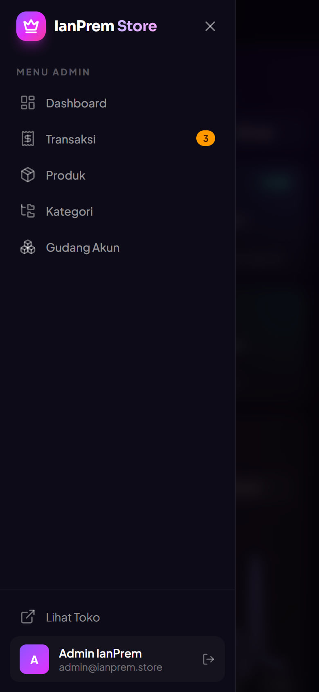
Ikuti urutan ini saat pertama kali mengisi toko. Setiap langkah bergantung pada langkah sebelumnya.
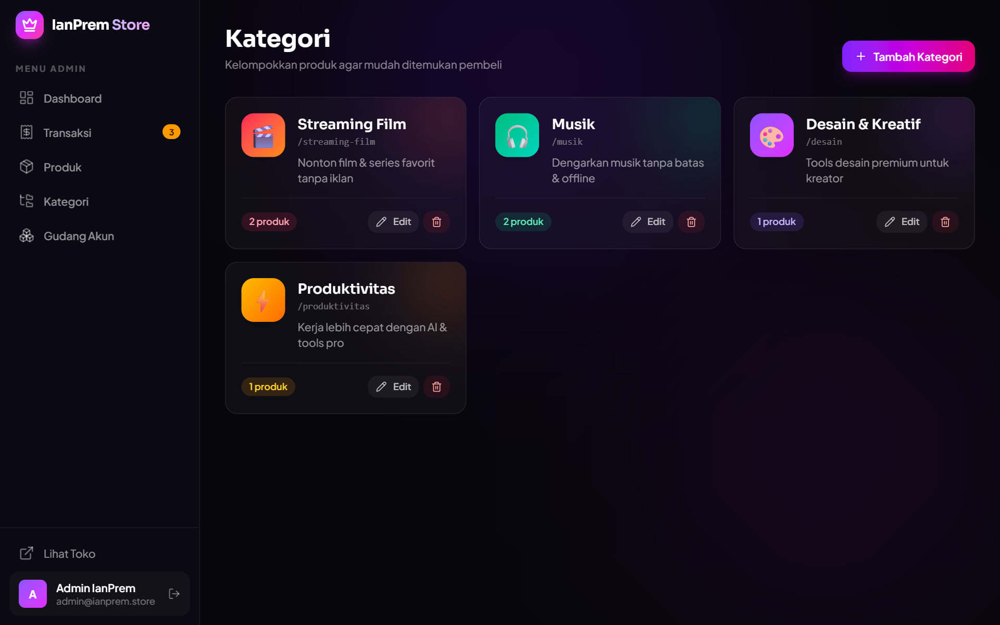
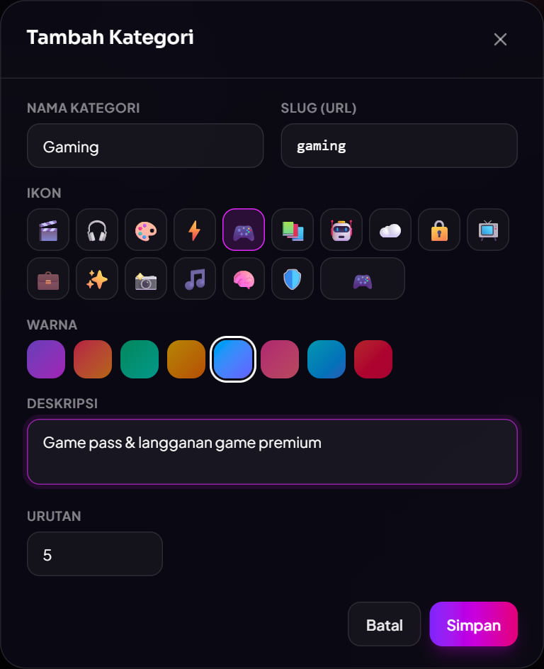
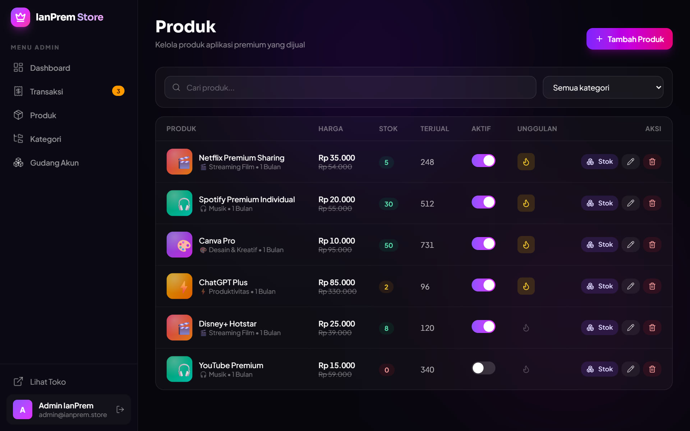
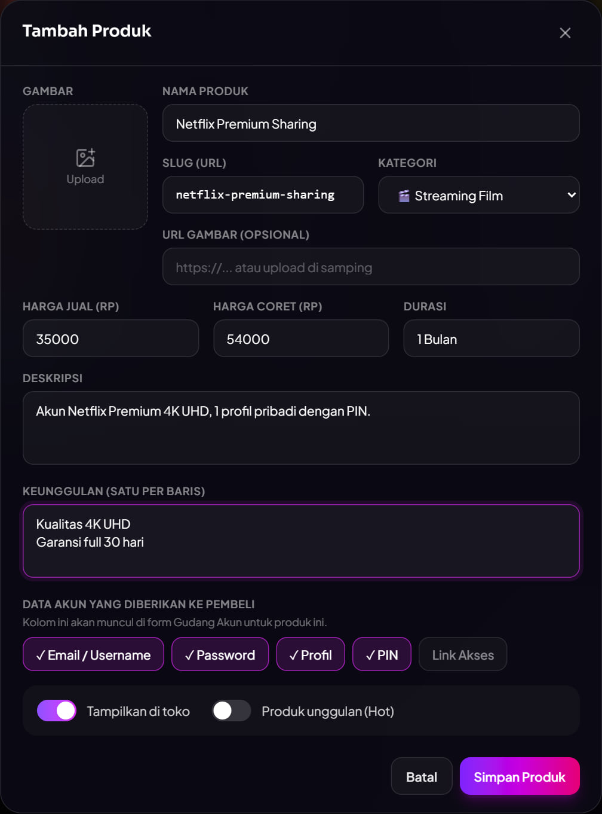
| Kolom | Keterangan |
|---|---|
| Nama Produk | Contoh: "Netflix Premium Sharing". Slug URL dibuat otomatis. |
| Kategori | Kelompok produk (dari menu Kategori). |
| Harga Jual (Rp) | Harga yang dibayar pembeli. Isi angka saja, tanpa titik: 35000. |
| Harga Coret (Rp) | Opsional. Harga normal untuk menampilkan label diskon (misal 54000 → -35%). |
| Durasi | Masa aktif, misalnya "1 Bulan" atau "3 Bulan". |
| Deskripsi | Penjelasan, aturan pemakaian, dan ketentuan garansi. |
| Keunggulan | Satu keunggulan per baris. Tampil sebagai daftar centang hijau. |
| Data akun | Pilih kolom yang relevan: Email/Username, Password, Profil, PIN, Link Akses. Contoh: Netflix memakai Email + Password + Profil + PIN, sedangkan Spotify via undangan memakai Email + Link Akses. |
| Tampilkan di toko | Jika dimatikan, produk disembunyikan dari pembeli. |
| Produk unggulan | Menampilkan label 🔥 Hot dan memprioritaskan produk di beranda. |
| Tombol | Fungsi |
|---|---|
| Sakelar Aktif | Tampilkan atau sembunyikan produk dari toko secara instan. |
| 🔥 Unggulan | Tandai atau lepas status produk unggulan. |
| 🗄️ Stok | Langsung membuka Gudang Akun untuk produk tersebut. |
| ✏️ Edit | Ubah data produk. Perubahan harga tidak memengaruhi pesanan yang sudah dibuat. |
| 🗑 Hapus | Menghapus produk beserta stok yang belum terjual. |
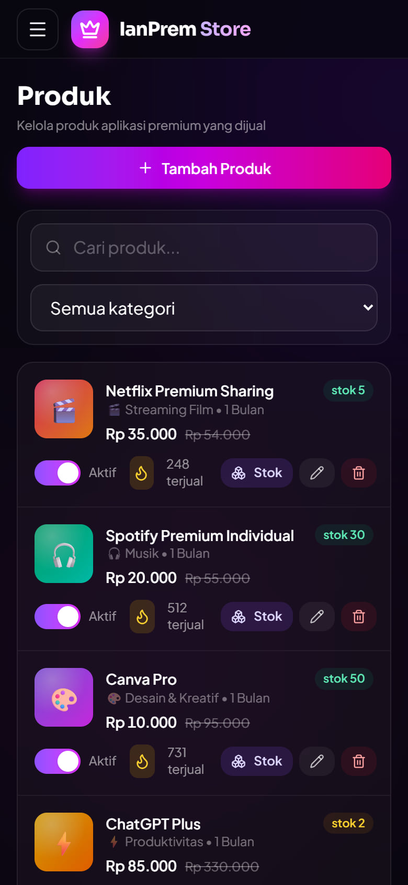
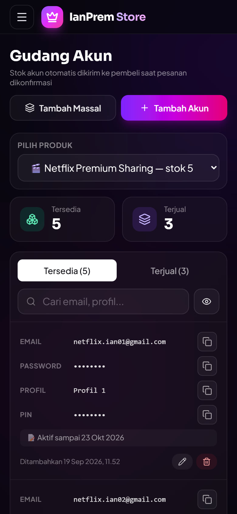
Gudang Akun menyimpan akun-akun yang siap dikirim. Setiap baris berisi satu akun (atau satu slot profil) yang akan diberikan ke satu pembeli.
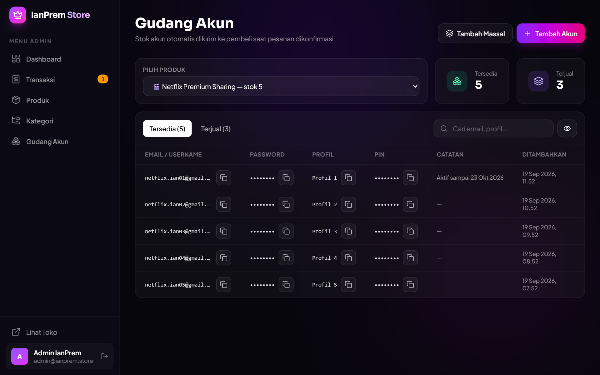
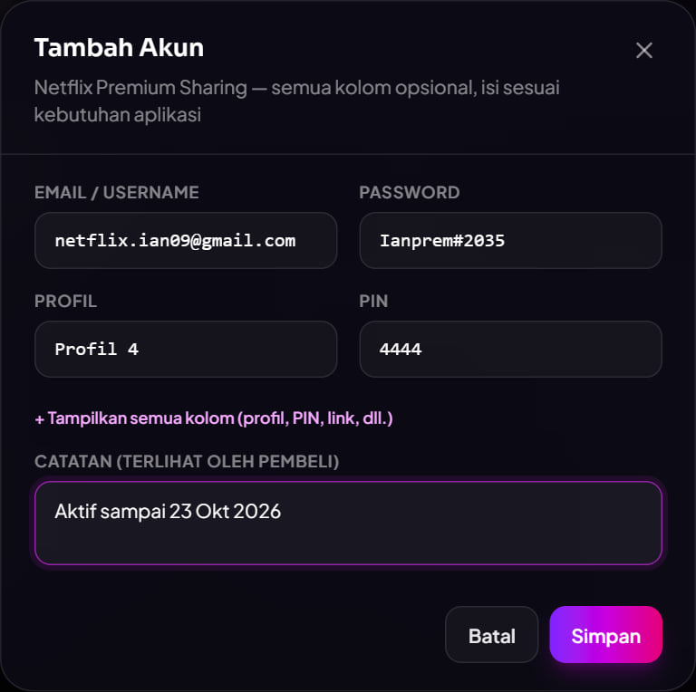
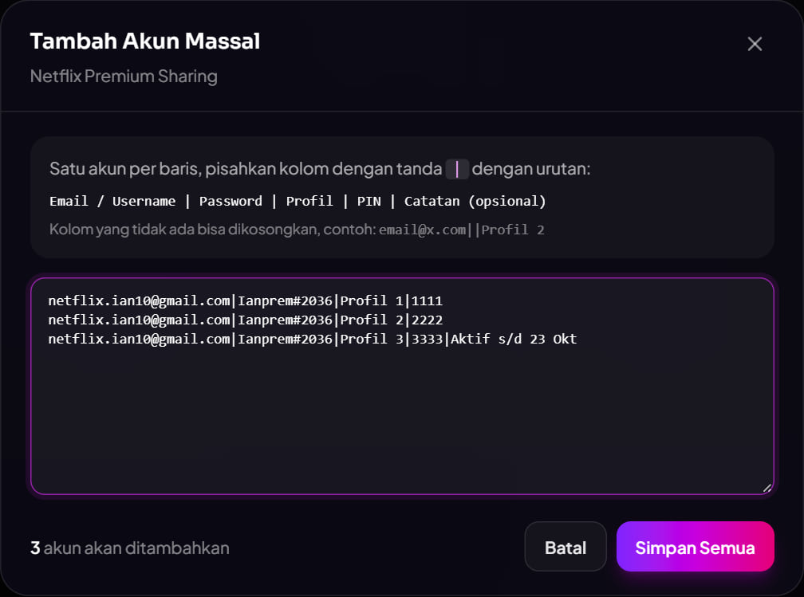
| sesuai urutan yang tertera di jendela.|. Teks setelah kolom terakhir menjadi Catatan.Contoh: produk Netflix (Email | Password | Profil | PIN), 1 akun dengan 3 profil:
Contoh: produk Canva (Email | Link Akses), akun tanpa password:
Menu Transaksi berisi riwayat semua pesanan. Angka oranye di menu dan tab Menunggu menunjukkan pesanan yang perlu diproses.
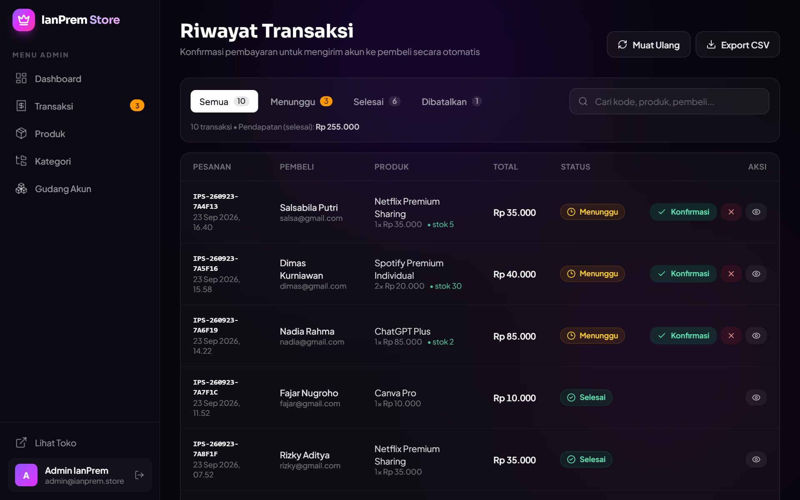
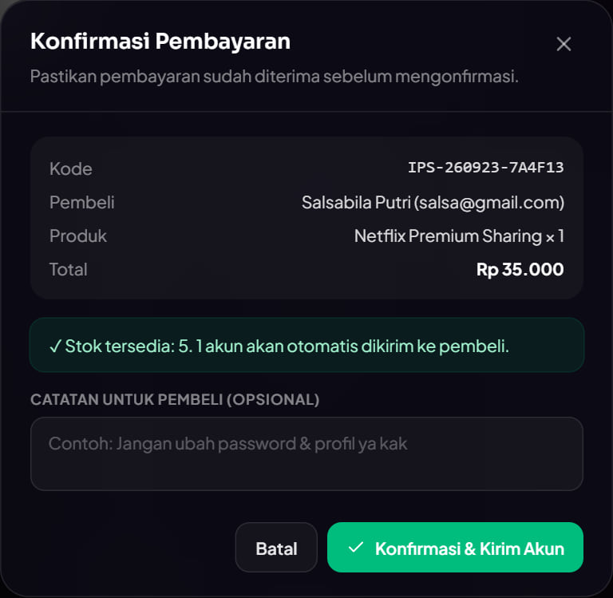
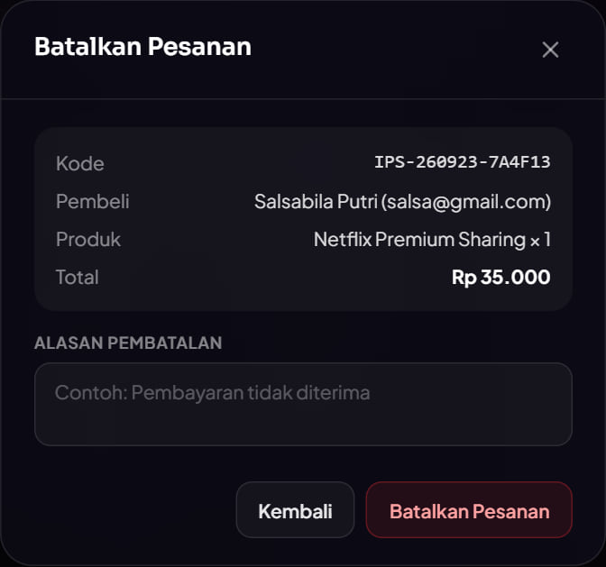
| Aksi | Cara & kegunaan |
|---|---|
| ✕ Batalkan | Untuk pesanan yang tidak dibayar. Isi alasan (terlihat oleh pembeli), lalu klik Batalkan Pesanan. Stok tidak berkurang. |
| 👁 Detail | Menampilkan data pembeli (nama, email, No. HP), rincian pesanan, catatan, dan akun yang sudah terkirim. |
| Chat Pembeli | Tombol di jendela Detail untuk membuka WhatsApp ke nomor pembeli. |
| Export CSV | Mengunduh daftar transaksi sesuai filter aktif. File bisa dibuka di Excel atau Google Sheets untuk laporan. |
| Muat Ulang | Menampilkan pesanan terbaru tanpa me-refresh halaman. |
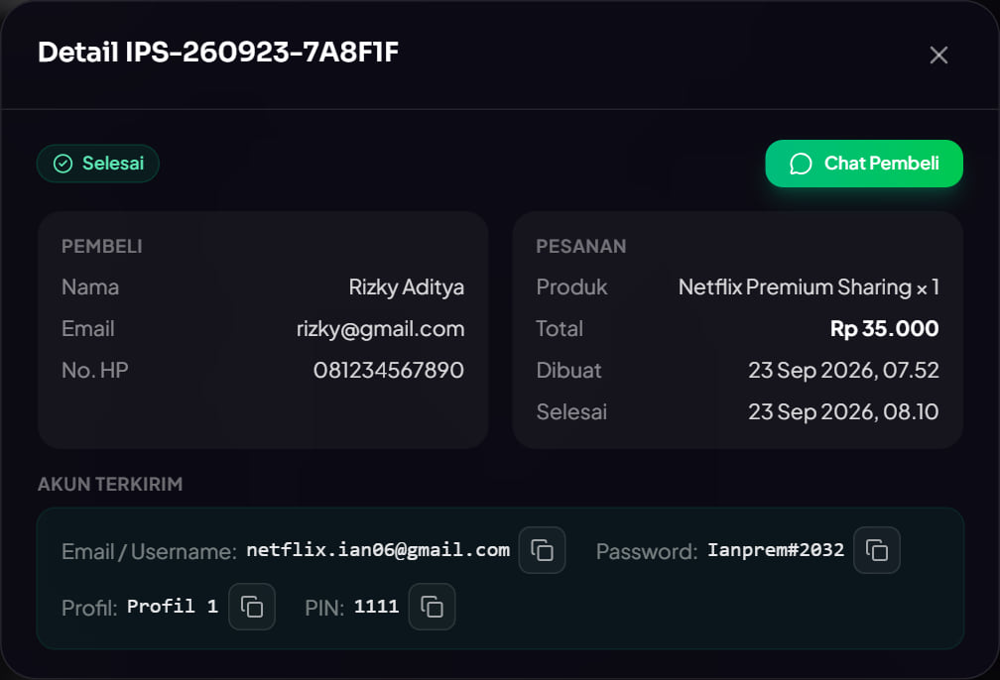
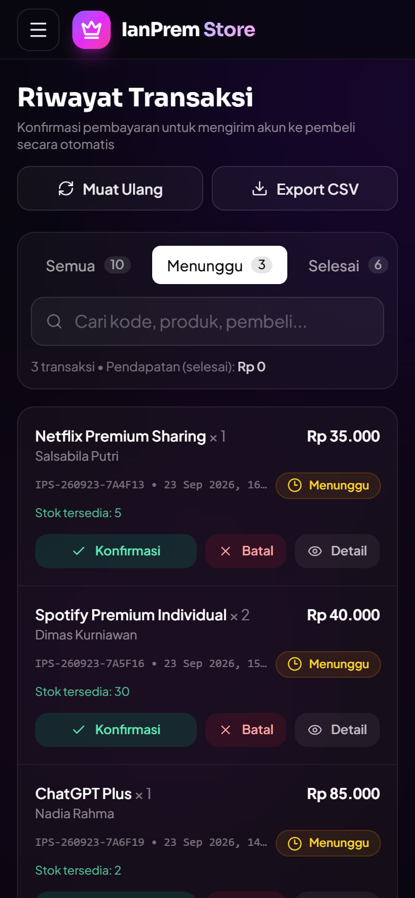
Dashboard adalah halaman pertama saat membuka panel admin. Gunakan tombol 7 Hari / 30 Hari / 90 Hari di kanan atas untuk mengganti periode. Semua angka dan grafik ikut menyesuaikan.
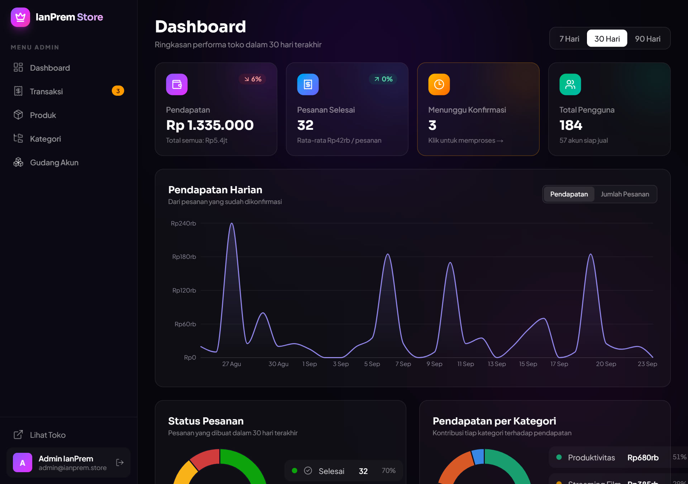
| Kartu | Arti |
|---|---|
| Pendapatan | Total uang dari pesanan Selesai pada periode terpilih. Label ↗/↘ % membandingkannya dengan periode sebelumnya yang sama panjang. Baris kecil di bawahnya menunjukkan total sepanjang masa. |
| Pesanan Selesai | Jumlah pesanan yang dikonfirmasi, beserta rata-rata nilai per pesanan. |
| Menunggu Konfirmasi | Pesanan yang belum diproses. Klik kartu ini untuk langsung membuka daftarnya. |
| Total Pengguna | Jumlah pembeli terdaftar, serta jumlah akun yang siap dijual di gudang. |
| Grafik | Cara membaca |
|---|---|
| Pendapatan / Pesanan Harian | Grafik garis per hari. Ganti tampilan dengan tombol Pendapatan atau Jumlah Pesanan. Arahkan kursor (atau ketuk di HP) ke titik mana pun untuk melihat angka persisnya. |
| Status Pesanan | Diagram lingkaran perbandingan pesanan Selesai, Menunggu, dan Dibatalkan pada periode tersebut, lengkap dengan jumlah dan persentasenya. |
| Pendapatan per Kategori | Kontribusi tiap kategori terhadap pendapatan (4 kategori teratas, sisanya digabung menjadi "Lainnya"). |
| Produk Terlaris | 5 produk dengan pendapatan tertinggi, serta jumlah akun terjual. |
| Stok Gudang | Total akun siap jual dan terjual, serta produk aktif dengan stok paling sedikit. Label merah berarti habis atau tinggal ≤ 2. |
| Transaksi Terbaru | 6 pesanan terakhir. Klik Lihat Semua untuk membuka menu Transaksi. |
| Kapan | Yang dilakukan |
|---|---|
| Setiap ada chat WA | Cocokkan kode pesanan, cek dana masuk, lalu klik Konfirmasi (SOP bab B6). |
| Setiap pagi | Buka Dashboard dan cek Menunggu Konfirmasi serta Stok Gudang yang menipis. |
| Stok ≤ 2 | Isi ulang lewat Tambah Massal agar pembeli tidak melihat "Stok Habis". |
| Pesanan tidak dibayar > 1×24 jam | Batalkan dengan alasan "Pembayaran tidak diterima". |
| Produk tidak dijual lagi | Matikan sakelar Aktif, jangan dihapus. |
| Akun pembeli bermasalah (garansi) | Buka Gudang Akun → tab Terjual → cari kode pesanan → Edit data akun → kabari pembeli. |
| Akhir bulan | Transaksi → filter Selesai → Export CSV untuk laporan. |
Solusi untuk pesan error yang paling sering muncul, beserta ringkasan status.
| Pesan / Gejala | Penyebab | Solusi |
|---|---|---|
| "Email atau password salah" | Data login keliru | Periksa huruf besar/kecil dan ketik ulang password. Pastikan email yang dipakai sama dengan saat mendaftar. |
| "Email sudah terdaftar" | Email sudah dipakai | Gunakan menu Masuk, bukan Daftar. |
| "Email belum dikonfirmasi" | Link konfirmasi belum diklik | Cek inbox/Spam lalu klik link konfirmasi. Admin: bisa mematikan "Confirm email" di Supabase → Authentication. |
| "Pendaftaran sedang ditutup" | Signup dimatikan di Supabase | Admin: Supabase → Authentication → Sign In / Providers → aktifkan Email provider & Allow new users to sign up. |
| "Terlalu banyak percobaan" | Batas email/login Supabase | Tunggu beberapa menit lalu coba lagi. |
| "Stok tidak mencukupi" | Stok kurang dari jumlah yang dibeli | Pembeli: kurangi jumlah. Admin: tambah akun di Gudang. |
| "Stok akun tidak mencukupi" (saat konfirmasi) | Gudang kosong untuk produk itu | Tambahkan akun di Gudang Akun, lalu konfirmasi ulang. |
| "Produk sudah memiliki transaksi" | Menghapus produk yang pernah terjual | Matikan sakelar Aktif. |
| "Slug sudah dipakai" | URL produk atau kategori kembar | Ubah nama atau slug agar unik. |
| "Akses Ditolak" di /admin | Akun bukan admin | Jalankan SQL di bab B1 untuk akun tersebut. |
| "Pesanan sudah diproses sebelumnya" | Pesanan sudah dikonfirmasi atau dibatalkan (mungkin oleh admin lain) | Klik Muat Ulang untuk melihat status terbaru. |
| Produk tidak muncul sama sekali | Produk nonaktif, atau project Supabase dijeda | Cek sakelar Aktif. Jika semua kosong, Restore project di Supabase. |
| Gagal upload gambar | File > 2 MB atau bukan gambar | Kompres gambar (misal di tinypng.com) atau tempel URL gambar. |
| Status | Terlihat oleh pembeli | Tindakan admin | Stok gudang |
|---|---|---|---|
| ⏱ Menunggu | Tombol Bayar via WA, Cek Status, Batalkan | Konfirmasi atau Batalkan | Belum berkurang |
| ✓ Selesai | Data akun lengkap + catatan admin | Lihat detail, edit akun jika garansi | Berkurang sesuai jumlah |
| ✕ Dibatalkan | Alasan pembatalan | Tidak ada | Tidak berubah |